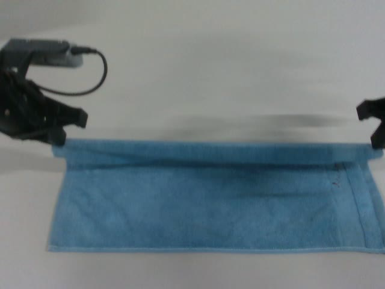

2026 年 10 月 30 日实机录像
正在连接本地服务
从看见，到亲手参与
让动作有据可查
看一段实机折叠，再亲手调整一条动作，或留下您的第一抓。
两种互动可独立体验，也可连续进行。
互动 01 / 只需拖动一个滑块
这条动作越界了，您来调回来
把白色圆点拖回绿色区，检查结果自动更新。
- ① 看越界动作
- ② 拖回绿色区
- ③ 看检查结果
右臂 J2 · 角度示意等待载入
…
等待载入
正在读取配置
挑战开始尚未检查2.650 rad · 人为注入越界
您的调整等待调整拖动后自动检查
查看案例与诊断信息

以历史控制第 201 步为底稿，只修改右臂 J2 目标。图示用于解释角度；检查通过表示未触发当前诊断规则。
—
互动 02 / 体验 VLA 流程的第一步
您来采一条示范数据
点开始，自由示范；做完后点结束，自动保存到专用文件夹。
- ① 采集示范您正在体验
- ② 整理与对齐画面、指令、动作
- ③ 训练 / 微调学习对应关系
- ④ AI PC 推理根据场景生成动作
- ⑤ FPGA 检查再交给执行与反馈
V 场景画面 + A 示范动作夹爪 — mm
V · 机器人看到什么
当前未采图像接入相机后，一起保存现场画面。
夹爪开度 / mm最大关节角变化 / °
0 秒———
V · 场景图像未接相机告诉模型：眼前是什么
L · 任务指令本条示范共用一句指令告诉模型：要完成什么
A · 示范动作6 个关节 + 夹爪提供学习目标：怎样做
正在检查主臂
0.0秒 / 时长由您决定
0 笔动作 · 0 张图像准备采集一条示范
先点开始，再示范动作；做完后点结束并保存。
已保存到专用文件夹
这条数据在整个项目里有什么用？
相机画面提供视觉输入 V，任务文字提供语言输入 L，示范动作 A 提供学习目标。把同一时刻的内容整理对应，模型才能学习“看到这样的场景、收到这样的任务，接下来怎样动作”。
示范先保存为原始采集素材，后续筛选、检查质量、补齐机器人实际状态与所需视角，再转换格式，用于训练或微调。部署时由 AI PC 推理生成动作，再送到 FPGA 检查，并结合执行反馈持续观测。
本页动作来自右主臂指令。相机画面使用服务器接收时间做近邻对应，尚未做硬件曝光同步；完整训练数据还需从臂实际反馈等信息。本次采集不会直接更新正在演示的模型。
查看专用文件夹里的采集记录
尚无记录
看首抓画面与历史实机回放
点一个您想夹的位置。
历史实机录像，与本次示范分别记录。